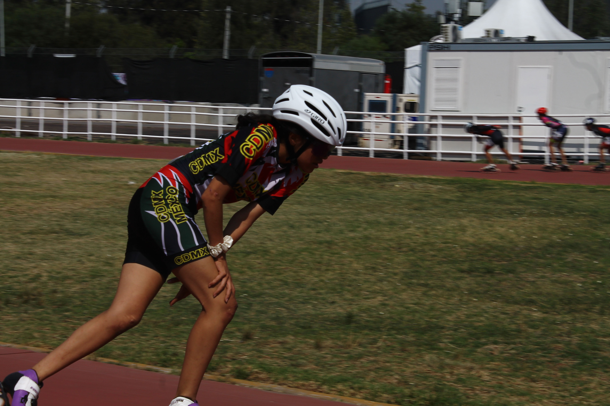
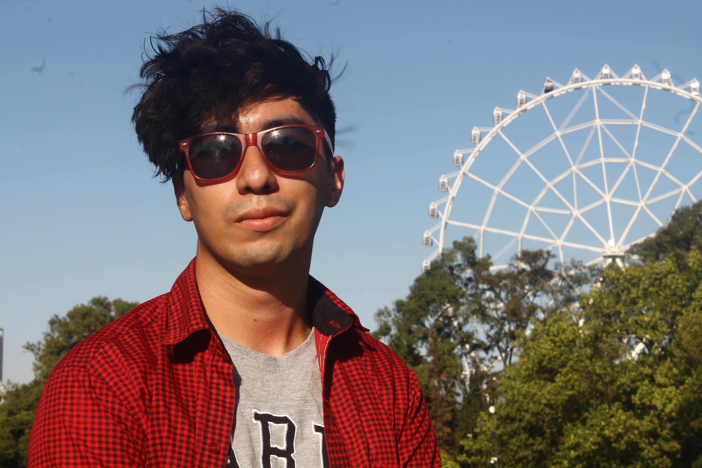
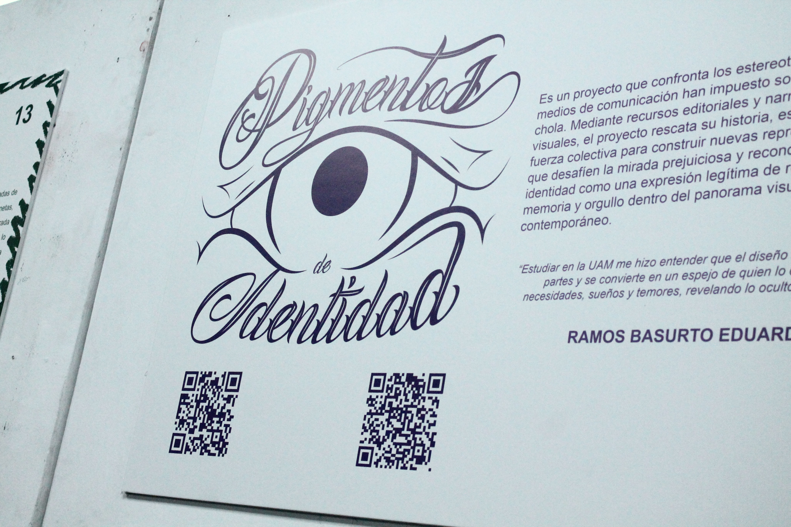

Fotografías
Me llamo Bruno y soy fotográfo principiante. Esta es mi página de fotografía para darme a conocer a nivel nacional. Actualmente estoy en la carrera de Diseño de la Comunicación Grafíca en la UAM Azcapotzalco, a lo largo de los dos años que llevo en ella eh aprendido a ocupar muchos programas y herramientas y entre ella esta la cámara digital con la que eh seguido aprendiendo del mundo tan inmenso que es la fotografía.
Estas son algunas fotos que eh tomado a lo largo del tiempo que llevo en el mundo de la fotografía, eh aprendido a manejar mejor la camara digital para tener unas fotografias de mejor calidad

Deporte 1 de Julio de 2025

Naturaleza 18 de Abril de 2025

Ciudad 27 de Abril de 2025

Universidad 24 de Septiembre de 2025